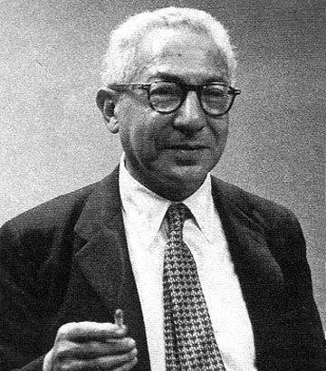
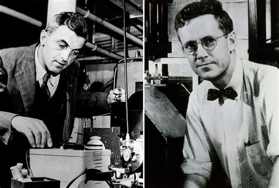
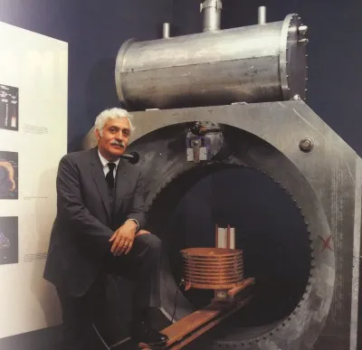
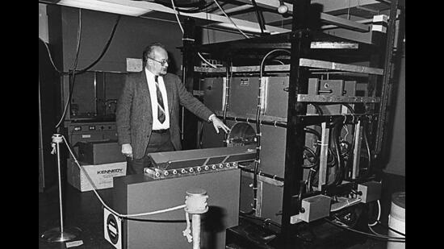

-
1938
Observation du phénomène NMR

Isidor Rabi et son équipe observent pour la première fois le phénomène de Résonance Magnétique Nucléaire (RMN), ouvrant la voie aux futures applications en imagerie.
-
1946
Prix Nobel pour Bloch et Purcell

Felix Bloch et Edward Purcell démontrent l’application de la RMN aux liquides et solides, une avancée majeure qui leur vaudra le prix Nobel de physique en 1952.
-
1971
Première idée d’IRM médicale

Raymond Damadian propose d'utiliser la RMN pour distinguer les tissus sains des tissus cancéreux, posant ainsi les bases de l’IRM médicale.
-
1973
Première image en résonance magnétique

Paul Lauterbur produit la première image par résonance magnétique de deux tubes d’eau, démontrant le potentiel de la technique pour l’imagerie médicale.